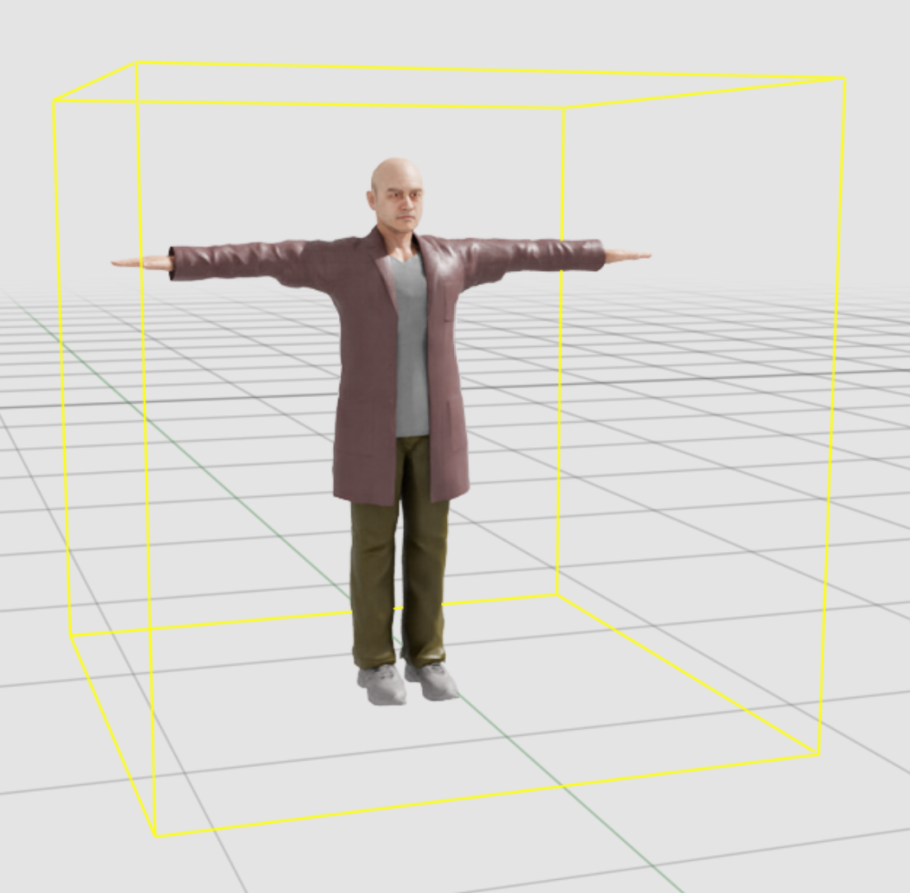
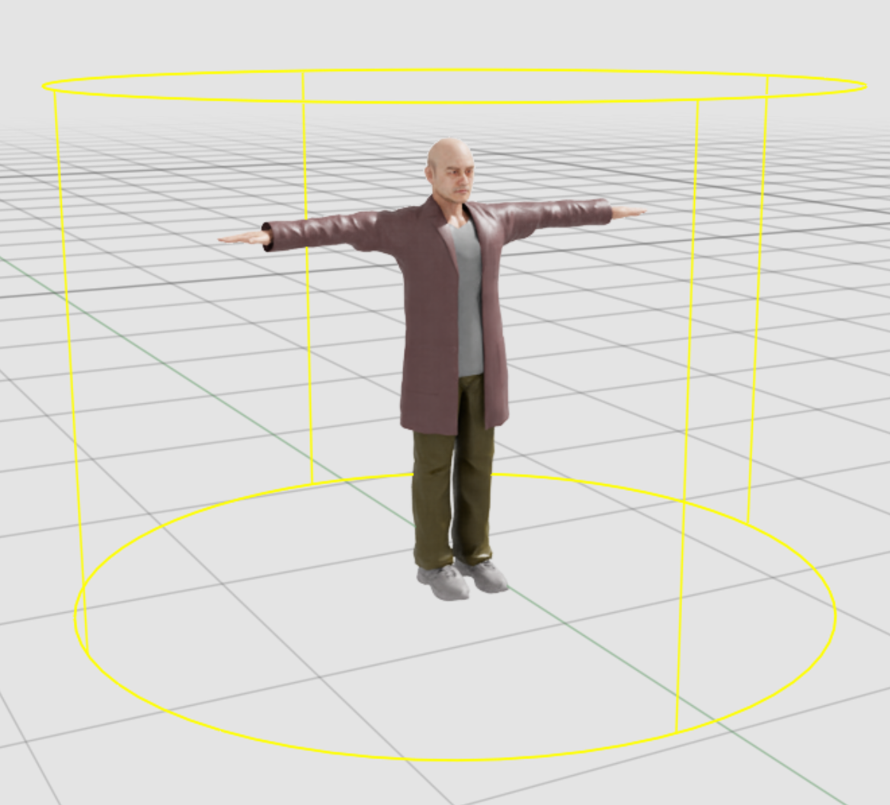

Configuration File Guide#
이 가이드는 시뮬레이션 및 합성 데이터 생성을 위한 Isaac Sim Replicator Agent(IRA) 구성 방법을 설명합니다. 구성은 환경, 센서 생성 및 배치, 캐릭터/로봇 에이전트, 동작, 데이터 생성을 제어합니다.
Concepts and Workflow#
세부 구성에 들어가기 전에 IRA 시뮬레이션의 일반 워크플로와 주요 개념을 검토합니다.
Workflow Overview#
환경 설정: 시뮬레이션이 진행되는 정적 3D 환경을 정의합니다.
에이전트 및 센서 정의: 환경에 배치할 캐릭터, 로봇, 카메라(센서)를 구성합니다.
동작 구성: 행위자에게 루틴(걷기, 유휴 상태 등 가중치가 있는 무작위 동작)과 트리거(충돌 발생 시 등의 반응 동작)를 할당합니다. 또는 루틴과 트리거 대신 행동 트리로 그룹을 구동할 수 있습니다(실험적; 캐릭터 및 로봇 그룹 모두 사용 가능).
데이터 생성: Replicator 라이터를 구성하여 Ground Truth 데이터(RGB, 분할)를 생성합니다.
Key Concepts#
환경: 시뮬레이션을 위해 로드되는 정적 3D 세계(USD 스테이지). NavMesh도 정의합니다.
에이전트(행위자): 씬의 동적 엔티티로, 캐릭터(인간) 또는 로봇이 될 수 있습니다.
동작: 행위자가 수행할 수 있는 원자적 동작으로
wander,patrol,idle등이 있습니다.루틴: 행위자 그룹에 할당된 동작 모음. 행위자는 할당된 가중치를 기반으로 이 풀에서 무작위로 동작을 선택합니다.
트리거: 정상 루틴을 중단하는 조건부 로직. 조건이 충족되면(예: 특정 시간 또는 이벤트) 트리거가 정의된 동작 목록을 순서대로 실행합니다. 트리거 시퀀스가 완료되면 다른 트리거가 활성화될 때까지 에이전트는 표준 루틴을 재개합니다.
행동 트리(실험적): 루틴-트리거 시스템의 대안. 캐릭터 또는 로봇 그룹은
routines/triggers대신behavior_treeJSON 에셋을 지정할 수 있으며, 그룹의 모든 로직이 트리 내에서 작성됩니다. Behavior Tree Character Group (Experimental) 및 Behavior Tree Robot Group (Experimental)를 참조하세요.센서: 시뮬레이션을 관찰하기 위해 씬에 배치된 카메라.
Replicator: 프레임을 렌더링하고 주석이 달린 데이터(Ground Truth)를 디스크 또는 클라우드 스토리지에 쓰는 시스템.
Top-level Structure#
구성 파일은 단일 루트 키 isaacsim.replicator.agent를 가진 YAML 파일입니다:
isaacsim.replicator.agent:
version: 1.6.0
environment: { ... } # required
seed: 123456789 # optional; 32-bit (0..4294967295); autogenerated if omitted
simulation_duration: 60.0 # optional; defaults to 60.0
character: { ... } # optional
robot: { ... } # optional
sensor: { ... } # optional
replicator: { ... } # optional
Root Parameters#
version(필수): 구성 스키마의 시맨틱 버전(예: "1.0.0").
environment(필수): 시뮬레이션 세계를 정의합니다.
seed(선택): 32비트 부호 없는 정수(0..4,294,967,295). - 결정론적 시뮬레이션(예: 캐릭터 스폰 위치, 루틴 변형)을 위해 난수 생성기를 초기화하는 데 사용됩니다. - 생략하면 현재 시스템 시간을 기반으로 시드가 생성됩니다.
simulation_duration(선택): 시뮬레이션의 총 실행 시간(초, >= 0이어야 함). - 시뮬레이션은 타임라인의 틱당
dt를1/30 s로 설정하고 애플리케이션 루프 속도를 30Hz로 제한하여 실행됩니다. 이는 실질적인 30 FPS 재생 속도를 제공합니다. - 기본값은60.0초입니다.character(선택): 인간 에이전트를 구성합니다(외형, wander/patrol 등의 동작, 트리거).
robot(선택): 로봇 에이전트를 구성합니다(구성 경로, 동작/명령, 데이터 수집).
sensor(선택): 배치 전략을 사용하여 정적 카메라를 구성합니다(예: 대상을 향해, 커버리지).
replicator(선택): 데이터 라이터를 구성합니다(예: 출력 디렉터리, RGB/분할 등의 어노테이터).
Quick Start (Minimal)#
isaacsim.replicator.agent:
version: 1.6.0
environment:
base_stage_asset_path: "Isaac/Environments/Simple_Warehouse/full_warehouse.usd"
Sections#
Environment#
로드할 정적 3D 환경과 추가 에셋을 정의합니다.
base_stage_asset_path(필수): 기본 USD 스테이지의 경로 또는 URL. -http(s)://(S3 프리사인드 URL 포함), Windows/UNC 경로, 로컬 파일 시스템 경로를 지원합니다. - Isaac Sim Assets 루트를 기준으로 한 상대 경로도 지원합니다.prop_asset_paths(선택): 스테이지에 서브레이어로 로드할 추가 USD 에셋 목록. 기본 환경을 수정하지 않고 소품이나 조명을 추가하는 데 유용합니다. Isaac Sim Assets 루트를 기준으로 한 상대 경로를 지원합니다.
예시:
environment:
base_stage_asset_path: "Isaac/Environments/Simple_Warehouse/full_warehouse.usd"
prop_asset_paths:
- "Isaac/Props/Conveyors/ConveyorBelt_A08.usd"
Character#
인간 캐릭터 그룹, 외형, 동작을 정의합니다.
root_prim_path(선택): 캐릭터를 스폰할 루트 경로(기본값:/World/Characters).motion_library_path(선택): 커스텀 모션 라이브러리 파일의 경로. Isaac Sim Assets 루트를 기준으로 한 상대 경로를 지원합니다. 기본값:Isaac/People/MotionLibrary/HumanMotionLibrary.usd.groups: 캐릭터 그룹 딕셔너리.
캐릭터 그룹에는 두 가지 유형이 있습니다:
루틴-트리거 방식으로 동작을 정의하는 BaseCharacterGroup.
행동 트리 JSON 파일을 받는 BehaviorTreeGroup(실험적).
Base Character Group#
Group Parameters#
num(필수): 스폰할 캐릭터 수(>= 0).asset_path(선택): 캐릭터 에셋에 대한 USD 경로. Isaac Sim Assets 루트를 기준으로 한 상대 경로를 지원합니다. 기본값:Isaac/People/Characters/.spawn_areas(선택): 캐릭터가 스폰될 수 있는 NavMesh 영역 이름 목록. 비어 있으면 NavMesh 어디에서나 스폰됩니다.semantic_labels(선택): 시맨틱 분할을 위한[type, data]쌍 목록. 기본값:[["class", "character"]].routines(선택): 캐릭터가 실행할 동작 목록. 기본값:[{ wander: {} }].triggers(선택): 루틴을 중단하는 이벤트 기반 트리거 목록.colliders(선택): 캐릭터 아래에 스폰될 콜라이더 목록.
Behaviors#
동작은 routines 목록에 정의됩니다. 공통 필드:
weight(기본값 1): 이 동작을 선택하는 확률 가중치.repeat(기본값 1): 새 동작을 선택하기 전에 이 동작을 반복하는 횟수.
지원 동작:
wander: 무작위로 걷고 유휴 상태가 됩니다.
walk: -speed_range: [min, max] m/s (기본값 [1.0, 1.0]). -distance_range: [min, max] 걷기 구간당 이동 거리(기본값 [5.0, 15.0]). -navigation_areas: 허용된 NavMesh 영역 태그 목록. 각 항목은 고유하고 비어 있지 않은 문자열이어야 합니다.idle: 유휴 옵션 배열. -animation: 애니메이션 이름(모션 라이브러리에 존재해야 함). -time_range: [min, max] 지속 시간(초, 기본값 [2.0, 5.0]). -weight: 선택 확률.
patrol: 특정 경로를 따릅니다.
speed_range: [min, max] m/s (기본값 [1.0, 1.0]).다음 중 하나가 필수입니다: -
path_points: 3D 포인트 목록[[x,y,z], [x,y,z], ...]. -target_prims: 방문할 prim 경로 목록.Note
path_points와target_prims모두 NavMesh 위에 있어야 하며 행위자가 도달 가능해야 합니다.
stop: 임의의 기간 동안 제자리에 멈추고 유휴 상태가 됩니다.
time_range: [min, max] 지속 시간(초, 기본값 [5.0, 5.0]).
Colliders#
캐릭터는 루트 아래에 스폰하고 연결할 콜라이더 목록을 정의할 수 있습니다. 이 콜라이더는 캐릭터가 다른 콜라이더에 진입하거나 나올 때 동작을 수행하는 시나리오를 만들기 위해 collision_trigger와 함께 사용됩니다(트리거 섹션의 세부 사항 참조).
다음 두 가지 유형의 콜라이더가 스폰되면 콜라이더 prim에 PhysicsRigidBodyAPI, PhysicsCollisionAPI, PhysxTriggerAPI가 적용됩니다:
box: UsdGeom.Cube에서의 콜라이더.
dimension: x, y, z 순서의 큐브 치수(예: [1.0, 1.0, 1.0]). 값 유형은 Array.
cylinder: UsdGeom.Cylinder에서의 콜라이더.
radius: 실린더 반경. 값 유형은 Float.
 크기 2x2x2의 박스 콜라이더# |
 반경 1.5의 실린더 콜라이더# |
{kind=link}
{kind=link}
각 콜라이더는 이름도 정의합니다. 이 이름은 충돌 필터링을 위해 collision_trigger의 self_collider 또는 other_colliders에서 사용하기 위해 콜라이더의 커스텀 USD 문자열 속성 metro:collider:name으로 변환됩니다.
스폰된 콜라이더는 PhysicsCollisionAPI가 있는 다른 콜라이더와 오버랩 이벤트를 생성합니다. collision_trigger는 커스텀 USD 문자열 속성 metro:collider:name이 있는지 확인하여 추가로 필터링합니다.
그러나 Physx는 두 개의 PhysxTriggerAPI 간의 트리거링을 지원하지 않으므로 두 캐릭터 간의 충돌 트리거링은 감지되지 않습니다.
권장 워크플로는 스테이지에 콜라이더를 미리 정의하고 metro:collider:name을 추가한 다음 구성 파일에 colliders와 collision_trigger를 설정하는 것입니다.
character:
groups:
Worker:
asset_path: "Isaac/People/Characters/"
num: 10
colliders:
# Spawn a cylinder collider for each worker
- cylinder:
name: worker_collider_0
radius: 1.2
triggers:
# Worker will pause a few sceonds when it walks into colldiers with name "loading_zone" or "unloading_zone" in stage
- collision_trigger:
self_collider: worker_collider_0
other_colliders: loading_zone;unloading_zone
behavior:
- stop:
time_range: [2.0, 4.0]
Triggers#
트리거는 정상 루틴을 중단하고 반응 동작 목록을 실행하는 이벤트를 정의합니다.
각 행위자는 수신할 트리거 목록을 지정할 수 있습니다.
priority(기본값 1): 우선순위가 높은 트리거가 낮은 트리거보다 우선합니다. >= 1이어야 합니다.behavior: 트리거될 때 순서대로 실행할 동작 목록.
Note
모든 트리거 변형은 엄격합니다. 트리거 블록 내의 알 수 없는 키는 유효성 검사에 실패합니다.
Tip
특정 액션 시퀀스 작성
루틴은 가중치를 기반으로 무작위로 동작을 선택하므로 결정론적 시퀀스에는 적합하지 않습니다. 행위자가 특정 순서로 동작을 수행해야 하는 경우(예: 지점 A로 걸어가고, 5초 동안 유휴 상태가 된 다음, 지점 B로 걸어가기), 대신 트리거를 사용하세요. 트리거의 behavior 목록은 항상 순서대로 실행되므로 스크립트된 시퀀스에 적합한 도구입니다. time: 0과 함께 time_trigger를 사용하여 시뮬레이션이 시작되는 즉시 시퀀스를 시작하세요.
트리거 유형:
event_trigger: 명명된 carb 이벤트에서 발생합니다.event: carb 이벤트 이름. 값 유형은 String; 비어 있지 않아야 합니다.
time_trigger: 재생 후 특정 시간 이후에 발생합니다.time: 시간(초). 값 유형은 Float; >= 0이어야 합니다.
collision_trigger: 이 행위자 아래의 특정 콜라이더가 다른 콜라이더와 오버랩을 시작하거나 종료할 때 발생합니다.self_collider: 사용할 이 행위자의 콜라이더 이름(그룹 설정의colliders필드에 의해 스폰됨). 값 유형은 String; 비어 있지 않아야 합니다.other_colliders: (선택) 반응할 다른 콜라이더의 세미콜론으로 구분된 이름 목록. 값 유형은 String; 기본값은""(오버랩 파트너의 콜라이더에 반응).trigger_enter: (선택) 오버랩 진입 시 트리거. 값 유형은 Boolean. 기본값은 True.trigger_exit: (선택) 오버랩 종료 시 트리거. 값 유형은 Boolean. 기본값은 False.
Tip
Python에서 이벤트 디스패치
# Send out a custom event named 'my_test_event' import carb carb.eventdispatcher.get_eventdispatcher().dispatch_event(event_name="my_test_event") # Actors spawned by trigger setting will react to `my_test_event`. # triggers: # - event_trigger: # event: my_test_event # priority: 10 # behavior: [...]
예시:
character:
root_prim_path: "/World/Characters"
groups:
warehouse_workers:
asset_path: "Isaac/People/Characters/"
num: 10
spawn_areas: ["warehouse_floor"]
routines:
- wander:
walk:
speed_range: [0.8, 1.5]
distance_range: [5.0, 10.0]
idle:
- animation: look_around
time_range: [2.0, 5.0]
triggers:
- time_trigger:
time: 30.0
priority: 10
behavior:
- patrol: # Move to break room
speed_range: [1.0, 1.2]
target_prims: ["/World/BreakRoom"]
- event_trigger:
event: test_event
priority: 10
behavior:
- patrol:
speed_range: [5.0, 5.5]
path_points:
- [0, 0, 0]
- [0, -5, 0]
# Pause a few sceonds when it walks into colldiers with name "loading_zone" or "unloading_zone"
- collision_trigger:
self_collider: worker_sensing_collider
other_colliders: loading_zone;unloading_zone
behavior:
- stop:
time_range: [2.0, 4.0]
colliders:
- cylinder:
name: worker_sensing_collider # A collider to represent the sensing range of the worker
radius: 10.0
Behavior Tree Character Group (Experimental)#
Warning
행동 트리 캐릭터 지원은 실험적이며 향후 릴리스에서 변경될 수 있습니다.
캐릭터 그룹이 routines와 triggers 대신 behavior_tree 키를 포함하는 경우 IRA는 이를 행동 트리 캐릭터 그룹으로 처리합니다. 이 모드에서는 모든 동작 로직이 IRA 루틴-트리거 시스템이 아닌 참조된 행동 트리 내에서 정의됩니다.
단일 구성에서 두 가지 그룹 유형을 혼합할 수 있습니다. 예를 들어, 한 그룹은 IRA 루틴을 사용하고 다른 그룹은 행동 트리를 사용할 수 있습니다.
Note
행동 트리 그룹에는 routines와 triggers 필드를 사용할 수 없습니다. 모든 반응 또는 조건부 로직은 행동 트리 내의 노드로 작성되어야 합니다.
행동 트리 전용 파라미터:
behavior_tree(필수): JSON 행동 트리 에셋의 경로 또는 URL. Isaac 에셋 루트 상대 경로(예:Isaac/...), 절대 파일 시스템 경로, 구성 파일 디렉터리를 기준으로 한 상대 경로를 지원합니다. 트리는omni.behavior.tree.core및omni.anim.behavior.tree와 같은 노드 라이브러리를 참조해야 합니다.overrides(선택): 원래 트리 파일을 수정하지 않고 런타임에 노드 포트 값을 재정의하는 JSON이 포함된 YAML 다중 줄 문자열. JSON은schemaVersion과instanceOverrides키를 포함하는omni.behavior.tree재정의 스키마를 따릅니다. 인스턴스 재정의에 대한 자세한 내용은 Behavior Tree's User Guide를 참조하세요.
공유 파라미터(IRA 캐릭터 그룹과 동일):
num(필수): 스폰할 캐릭터 수(>= 0).asset_path(선택): 캐릭터 에셋에 대한 USD 경로. 기본값:Isaac/People/Characters/.spawn_areas(선택): 캐릭터가 스폰될 수 있는 NavMesh 영역 이름 목록.semantic_labels(선택):[type, data]쌍 목록. 기본값:[["class", "character"]].motion_library_path(선택): 커스텀 모션 라이브러리 파일의 경로.colliders(선택): 캐릭터 그룹의 콜라이더 객체 목록.
최소 예시:
character:
groups:
bt_workers:
num: 3
asset_path: "Isaac/People/Characters/"
behavior_tree: ../sample_behavior_tree/character_wander.json
재정의가 있는 예시:
overrides 필드는 JSON 문자열(|를 사용하는 YAML 다중 줄 블록 스칼라로 작성)로 트리 파일을 편집하지 않고 그룹별로 노드 파라미터를 조정할 수 있습니다. JSON 구조에는 두 가지 키가 있습니다:
schemaVersion(필수):"2.0.0"이어야 합니다.instanceOverrides(필수): 노드 경로(예:/Root/MoveTo:RandomNavMeshPoint)를 포트 재정의(포트 이름에서 유형 및 재정의된 값으로의 딕셔너리)에 매핑하는 딕셔너리.
RandomNavMeshPoint 수정자 노드의 wander 반경을 변경하려면:
character:
groups:
bt_workers:
num: 3
asset_path: "Isaac/People/Characters/"
behavior_tree: ../sample_behavior_tree/character_wander.json
overrides: |
{
"schemaVersion": "2.0.0",
"instanceOverrides": {
"/Root/MoveTo:RandomNavMeshPoint": {
"radius": {
"type": "carb::Float2",
"value": [2.0, 10.0]
}
}
}
}
혼합 구성 예시(IRA + 행동 트리):
character:
root_prim_path: "/World/Characters"
groups:
ira_wanderers:
num: 5
routines:
- wander:
walk:
speed_range: [0.8, 1.5]
bt_patrol_group:
num: 3
behavior_tree: ../sample_behavior_tree/character_wander.json
Robot#
로봇 에이전트를 정의합니다.
root_prim_path(선택): 로봇의 루트 경로(기본값:/World/Robots).groups: 로봇 그룹 딕셔너리.
Robot Group Parameters#
num(필수): 로봇 수(>= 1).config_file_path(필수): 이 로봇 유형에 대한 로봇 에이전트 YAML 구성 파일의 경로. 절대 경로 또는isaacsim.anim.robot.core확장 프로그램 내의 내장 샘플 구성 폴더(data/sample_configs/)를 기준으로 한 상대 경로를 지원합니다.spawn_areas(선택): 스폰을 위한 NavMesh 영역.agent_radius(선택): NavMesh 쿼리에 사용되는 반경(미터). 설정 시 > 0이어야 합니다. 생략하면 런타임 기본값은0.5.write_data(선택):true이면 로봇의 온보드 카메라에서 데이터 수집을 활성화합니다.camera_prim_paths(선택): 사용할 로봇의 특정 카메라 prim 목록. 비어 있고write_data가 true이면 로봇의 모든 카메라가 사용됩니다.write_data가true여야 합니다.semantic_labels(선택): 기본값[["class", "robot"]].semantic_label_path(선택): 시맨틱을 적용할 로봇 prim 아래의 상대 경로.routines(선택): 로봇 동작 목록. 기본값:[{ wander: {} }].triggers(선택): 루틴을 중단하는 트리거 목록. 로봇은event_trigger,time_trigger,collision_trigger를 지원합니다.colliders(선택): 각 로봇 아래에 스폰하고 연결할 콜라이더 목록(캐릭터colliders와 동일한 스키마; Colliders 섹션 참조). 로봇이 다른 콜라이더에 진입하거나 나올 때 동작을 구동하기 위해collision_trigger와 함께 사용됩니다.
Robot Behaviors#
wander: -
move: {distance_range: [min, max] (기본값 [10.0, 15.0]),navigation_areas: 허용된 NavMesh 영역 태그 목록, 각 항목은 고유하고 비어 있지 않은 문자열(기본값 []) } -idle: {time_range: [min, max] (기본값 [2.0, 5.0]) }patrol(
path_points또는target_prims중 하나가 정확히 필요합니다): -path_points: 3D 포인트 목록[[x,y,z], [x,y,z], ...]. -target_prims: 방문할 prim 경로 목록.Note
path_points와target_prims모두 NavMesh 위에 있어야 하며 로봇이 도달 가능해야 합니다.halt: -
time_range: [min, max] 정지 상태를 유지할 시간(초, 기본값 [5.0, 5.0]).
Behavior Tree Robot Group (Experimental)#
Warning
행동 트리 로봇 지원은 실험적이며 향후 릴리스에서 변경될 수 있습니다.
로봇 그룹이 routines와 triggers 대신 behavior_tree 키를 포함하는 경우 IRA는 이를 행동 트리 로봇 그룹으로 처리합니다. 이 모드에서는 모든 동작 로직이 IRA 루틴-트리거 시스템이 아닌 참조된 행동 트리 내에서 정의되며, 로봇은 Animated Robot Behavior Tree Nodes(RobotMoveTo, RobotTurn, RobotIdle, RobotPlayAnimation, RobotIsInState 수정자)에 의해 구동됩니다.
단일 구성에서 두 가지 그룹 유형을 혼합할 수 있습니다. 예를 들어, 루틴 기반 그룹과 행동 트리 기반 그룹이 공존할 수 있습니다.
Note
행동 트리 로봇 그룹에는 routines, triggers, colliders를 사용할 수 없습니다. 모든 반응 또는 조건부 로직은 행동 트리 내의 노드로 작성되어야 합니다.
행동 트리 전용 파라미터:
behavior_tree(필수): JSON 행동 트리 에셋의 경로 또는 URL. Isaac 에셋 루트 상대 경로(예:Isaac/...), 절대 파일 시스템 경로, 구성 파일 디렉터리를 기준으로 한 상대 경로를 지원합니다.overrides(선택): 원래 트리 파일을 수정하지 않고 런타임에 노드 포트 값을 재정의하는 JSON이 포함된 YAML 다중 줄 문자열.omni.behavior.tree재정의 스키마(schemaVersion+instanceOverrides)를 따릅니다. 예시는 Behavior Tree Character Group (Experimental)를 참조하세요.
공유 파라미터(IRA 로봇 그룹과 동일):
num(필수): 스폰할 로봇 수(>= 1).config_file_path(선택): 로봇별 에이전트 YAML 경로(기본값:nova_carter.yaml).spawn_areas(선택): 로봇이 스폰될 수 있는 NavMesh 영역 이름 목록.agent_radius(선택): NavMesh 쿼리 반경(미터, 설정 시 > 0이어야 함).semantic_labels(선택): 기본값[["class", "robot"]].semantic_label_path(선택): 시맨틱을 적용할 로봇 prim 아래의 상대 경로.
최소 예시:
robot:
groups:
bt_carters:
num: 2
config_file_path: nova_carter.yaml
behavior_tree: ../sample_behavior_tree/robot_wander.json
Sensor#
씬에서 정적 카메라를 정의합니다. 카메라는 명명된 그룹으로 구성됩니다.
root_prim_path(선택): 모든 카메라 그룹이 생성될 절대 prim 경로(기본값:/World/Cameras).groups: 키가 그룹 이름이고 값이 카메라 구성을 정의하는 딕셔너리.
Group Configuration#
각 그룹은 num(카메라 수)과 하나의 배치 전략(aim_at_targets 또는 maximum_coverage)을 지정해야 합니다.
- aim_at_targets의 경우 num은 >= 0이어야 합니다.
- maximum_coverage의 경우 num은 >= -1일 수 있습니다. -1이면 그리드 해상도와 커버리지 비율을 기반으로 카메라 수가 자동으로 계산됩니다.
1. 배치 전략: aim_at_targets
특정 대상을 바라보도록 카메라를 배치합니다.
targets(선택): 대상 prim 경로 목록(예:/World/Characters) 또는 식별자.raycast_density(선택): 유효한 카메라 위치를 찾는 데 사용되는 광선 밀도. 값이 높을수록 더 정밀하지만 느립니다.yaw_range(선택): 대상 주변의 카메라 회전을 위한 [min, max] 도(0..360).occlusion_threshold(선택): 가려진 뷰를 필터링하는 임계값(-1이면 비활성화).
2. 배치 전략: maximum_coverage
환경의 시각적 커버리지를 최대화하도록 카메라를 배치합니다.
target_coverage_ratio(선택): 원하는 커버리지 비율(0.0에서 1.0). 기본값0.9.grid_resolution(선택): 커버리지 계산에 사용되는 그리드 셀 크기(미터). 기본값1.0.
공유 파라미터
이것은 모든 배치 전략에 적용됩니다:
height_range: [min, max] 높이(미터, Z축).look_down_angle_range: [min, max] 피치 각도(도, 0 = 수평, 90 = 수직 아래).focal_length_range: [min, max] 초점 거리(밀리미터).distance_range: [min, max] 카메라에서 대상 또는 관심 지점까지의 거리(미터).
예시:
sensor:
root_prim_path: "/World/Cameras"
groups:
ceiling_cameras:
num: 20
aim_at_targets:
targets: ["/World/Characters"]
distance_range: [5, 10]
height_range: [7, 10]
focal_length_range: [10, 15]
look_down_angle_range: [30, 45]
coverage_cameras:
num: 5
maximum_coverage:
target_coverage_ratio: 0.8
height_range: [2, 5]
Replicator#
Omniverse Replicator를 사용하여 합성 데이터(이미지, 어노테이션)의 생성을 제어합니다.
writers(필수): 라이터 구성 딕셔너리.hide_debug_visualization(선택, 기본값true): 데이터 캡처 중 디버그 시각화(NavMesh, 스켈레톤, 조명)를 숨깁니다.
Writer Configuration#
지원 라이터: IRABasicWriter, CosmosIRAWriter, SceneGraphWriter, CustomWriter.
Note
이전 릴리스에서는 스톡 Replicator BasicWriter가 Add Writer 드롭다운에 독립 항목으로 표시되어 라이터 키로 직접 사용할 수 있었습니다(예: BasicWriter:). isaacsim.replicator.agent.core 버전 1.6.1부터 BasicWriter는 UI 드롭다운에서 제거되었으며 구성의 최상위 라이터 키로 더 이상 허용되지 않습니다. 스톡 BasicWriter가 필요한 경우 writer_name: "BasicWriter"를 사용하여 CustomWriter 항목을 사용하세요. 자세한 내용은 아래의 CustomWriter 섹션을 참조하세요.
라이터별 일반 설정:
타이밍: -
start_frame/end_frame: 프레임 기반 제어(포함/제외). 지정하지 않으면 기본값start_frame: 30. -start_time/end_time: 시간 기반 제어(초).센서: -
sensor_prim_list: 사용할 카메라의 선택적 목록. 생략하면sensor.root_prim_path에 정의된 모든 카메라를 사용합니다.
출력 설정:
output_dir: 출력을 위한 로컬 디렉터리. 설정하지 않으면 기본값~/IRA_output.s3_bucket,s3_region,s3_endpoint: 직접 S3 업로드용.
일반 어노테이터(파라미터):
rgb: RGB 이미지.bounding_box_2d_tight/loose: 2D 경계 박스.bounding_box_3d: 3D 경계 박스.semantic_segmentation: 픽셀별 시맨틱 클래스 ID.instance_segmentation: 픽셀별 인스턴스 ID.distance_to_camera: 깊이 맵.normals: 표면 법선.motion_vectors: 픽셀 모션.colorize_*: 예:colorize_semantic_segmentation(raw ID와 비교하여 가시적 색상 맵으로 저장).
Specialized Writers#
IRABasicWriter:
에이전트 시뮬레이션을 위한 기반 라이터로 Replicator의
BasicWriter에서 파생됩니다. 어노테이터별 별도 폴더로 출력을 구성하고 객체 및 에이전트 메타데이터를object_detection.json에 통합합니다.주요 기능:
폴더 구조: 가독성을 위해 각 어노테이터의 데이터를 별도 폴더로 출력합니다.
객체 감지: 경계 박스와 스켈레톤 데이터를
object_detection.json이라는 단일 파일로 통합합니다.기본 시맨틱 필터:
class:character|robot;id:*(캐릭터와 로봇 캡처).액션 데이터 출력: 객체 감지가 활성화된 경우(object_info 또는 agent_info 어노테이터가 켜져 있을 때), 각 IRA 행위자의 액션 데이터도 포함됩니다.
덮어쓴 어노테이터: 다음 표준 어노테이터는 특수
object_info_*버전으로 대체되어object_detection.json에 기록됩니다:bounding_box_2d_tightbounding_box_2d_loosebounding_box_3dskeleton_data(agent_info_skeleton_data로 대체됨)
기본값:
rgb: 활성화됨.camera_params: 활성화됨.S3 관련 파라미터: 비활성화됨.
특수 파라미터:
video_rendering_annotator_list: 지정된 어노테이터에 대한.mp4동영상을 생성합니다(예:["rgb", "semantic_segmentation"]).agent_info_skeleton_data: 캐릭터의 2D/3D 스켈레톤 관절을 내보냅니다.
액션 데이터:
액션 데이터는 각 행위자의 현재 동작을 설명합니다.
object_detection.json의metro_agent_data섹션에 있습니다. 데이터에는 다음이 포함됩니다:prim path: 행위자 스키마가 적용된 prim 경로.agent_type: 행위자 스키마 유형.agent_name: 행위자의 이름.agent_group: 행위자의 그룹 이름.world_position: 월드 공간에서의 행위자 위치(vec3).world_rotation: 월드 공간에서의 행위자 회전(쿼터니언).world_moving_direction: 월드 공간에서의 행위자 이동 방향(vec3).null은 행위자가 이동하지 않음을 의미합니다.world_facing_direction: 월드 공간에서의 행위자 향하는 방향(vec3).speed: 행위자의 이동 속도.current_task_name: 행위자의 현재 액션 이름(동작 이름이 아님).asset_url: 행위자의 에셋 URL.
IRABasicWriter 예시:
replicator: writers: IRABasicWriter: output_dir: "<your_output_directory>" start_frame: 0 end_frame: 300 rgb: true camera_params: true bounding_box_2d_tight: true semantic_segmentation: true agent_info_skeleton_data: true video_rendering_annotator_list: ["rgb", "semantic_segmentation"]
CosmosIRAWriter:
"Cosmos" 전용 후처리를 추가합니다.
shaded_seg: 음영 처리된 분할 시각화.canny_edge: Canny 엣지 감지 필터(canny_threshold_low/high포함).
SceneGraphWriter:
표준 출력과 함께 프레임별 씬 캡션을 작성합니다. 이 라이터는
Isaacsim.Replicator.Caption확장 프로그램에서 제공됩니다. 구성 및 전체 예시는 Use Isaacsim.Replicator.Caption in Isaacsim.Replicator.Agent를 참조하세요.CustomWriter:
omni.replicator.core.WriterRegistry에 등록된 모든 라이터에 위임하는 유연한 래퍼. IRA 코드베이스를 수정하지 않고 타사 라이터, 다른 확장 프로그램의 라이터 또는 자체omni.replicator.core.Writer서브클래스를 사용하려면CustomWriter를 사용하세요.필수 파라미터:
writer_name(문자열, 필수): 대상 라이터의 레지스트리 이름(예:"BasicWriter","KittiWriter"또는 사용자 정의 이름).WriterRegistry에 등록된 모든 라이터를 여기에서 참조할 수 있으며, 스톡 ReplicatorBasicWriter도 포함됩니다.
선택적 파라미터:
writer_scope(문자열, 선택): 아직WriterRegistry에 없는 라이터를 검색하고 등록하기 위한 유연한 필드. 시스템이 자동으로 감지하는 세 가지 입력 모드를 허용합니다:패키지 또는 모듈 경로(예:
"omni.replicator.core"): 모든 서브모듈에서 구체적인Writer서브클래스를 스캔하고 일괄 등록합니다.전체 클래스 경로(예:
"my_extension.writers.MyWriter"): 단일 특정 라이터 클래스를 임포트하고 등록합니다.파일 시스템 경로(예:
"<path/to/your_writers.py>"): 파일을 로드하고 그 안에 정의된 모든Writer서브클래스를 등록합니다.
검색된 집합에서 특정 라이터를 선택하려면
writer_name을 사용하세요.
추가 파라미터: YAML 블록의 다른 모든 키-값 쌍은 대상 라이터의
initialize(**kwargs)호출에 직접 전달됩니다. 명시적으로 나열한 파라미터만 라이터의 내장 기본값을 재정의하며, 나열되지 않은 파라미터는 라이터 자체의 기본값을 유지합니다.
How parameter discovery works
CustomWriter항목이 로드될 때 시스템은 대상 라이터의__init__시그니처를 내성(introspection)하여 허용된 모든 파라미터와 해당 유형 및 기본값을 검색합니다. 이 시그니처에서 타입이 지정된 Pydantic 모델이 동적으로 생성되며, 이를 통해 다음이 가능합니다:유형 유효성 검사: 제공된 파라미터 값이 시뮬레이션 시작 전에 라이터의 예상 유형과 확인됩니다.
UI 통합: Configuration Editor UI에서 각 검색 가능한 파라미터가 올바른 위젯 유형을 가진 추가 가능한 필드로 표시됩니다. Add Parameter를 클릭하여 기본값을 재정의하거나, 파라미터를 제거하여 라이터 자체의 기본값으로 되돌립니다.
JSON으로 표현할 수 없는 유형의 파라미터(예: 커스텀 백엔드 객체)는 동적 모델과 UI에서 제외되지만 YAML에서 전달할 수 있습니다.
Note
일부 라이터는 라이터의 출력 크기를 구성하지만 기본 RenderProduct 해상도를 수정하지 않는
width와height파라미터를 허용합니다. 실제 렌더링 해상도를 변경하려면 먼저 CustomWriter UI 패널에서 RenderProduct Resolution을 조정한 다음 라이터의width와height파라미터를 이와 일치시키세요.Auto-registration using writer scope
구성이 로드될 때 라이터 클래스가 아직
WriterRegistry에 없는 경우writer_scope를 제공하여 IRA가 자동으로 검색하고 등록하도록 합니다. 시스템은 값에 따라 사용할 모드를 자동으로 감지합니다:파일 경로(
/,\포함 또는.py로 끝남): 디스크에서.py파일을 로드하고 그 안에 있는 모든Writer서브클래스를 등록합니다.단일 클래스 경로(마지막 세그먼트가 대문자로 시작, 예:
"my_extension.writers.MyWriter"): 해당 클래스를 임포트하고 등록합니다.패키지 스캔(예:
"omni.replicator.core"): 패키지를 재귀적으로 순회하고 모든 구체적인Writer서브클래스를 등록합니다.
이미 등록된 라이터는 자동으로 건너뜁니다. 해결 후
writer_name필드를 사용하여 대상 라이터를 선택합니다.writer_scope를 생략하면 라이터가 이미 등록되어 있어야 합니다(예: 제공하는 확장 프로그램을 활성화하여).Using CustomWriter in the UI
Configuration Editor를 통해
CustomWriter를 추가할 때:Add Writer를 클릭하고 유형 목록에서 CustomWriter를 선택합니다.
두 개의 필드가 있는 전용 대화 상자가 나타납니다:
Writer Name: 현재
WriterRegistry에 있는 모든 라이터를 나열하는 드롭다운. 대상 라이터를 선택합니다.Writer Scope: 패키지 경로, 점으로 구분된 클래스 경로, 또는
.py파일의 파일 시스템 경로를 허용하는 선택적 텍스트 필드. Register를 클릭하여 스코프에서 라이터를 검색, 유효성 검사, 등록하면 Writer Name 드롭다운도 갱신됩니다.
OK를 클릭하여 확인합니다. 편집기는 라이터 이름을 읽기 전용 레이블로 표시하고 현재 설정된 모든 파라미터와 해당 값을 나열합니다.
하단의 Add Parameter 드롭다운을 사용하여 라이터의
__init__시그니처의 추가 기본값을 재정의합니다.
Important
라이터를 선택하거나 등록한 후에는 반드시 OK를 클릭하여 확인하세요. 대화 상자를 확인하기 전까지 CustomWriter가 추가되지 않습니다.
Note
UI의 Writer Scope 필드는 이전의 Class Path 필드를 대체합니다. 세 가지 입력 모드(패키지 경로, 클래스 경로, 파일 경로)를 모두 허용하며 시스템이 자동으로 사용할 모드를 감지합니다.
Note
UI에 표시되는 파라미터 이름은 라이터의
__init__시그니처에서 자동으로 파생됩니다(예:RTSPStreamWriter의sensorSetName). 사용자가 커스텀 또는 타사 라이터를 임포트할 수 있으므로 특정 명명 형식은 강제되지 않습니다. UI는 가독성을 위해 각 이름의 첫 글자를 대문자로 표시하지만(예:sensorSetName은 SensorSetName으로 표시), 원래 이름은 라이터에 값을 전달할 때 사용됩니다.Multiple CustomWriter instances
동일한 구성에서 여러
CustomWriter항목을 구성할 수 있습니다. 고유한 키를 만들려면 숫자 접미사를 추가하세요:replicator: writers: CustomWriter: writer_name: "<your_writer_name>" <writer_param>: <your_value> CustomWriter_1: writer_name: "<your_other_writer_name>" <writer_param>: <your_value>
접미사(
_1,_2등)는 라이터 유형을 해결할 때 제거됩니다.writer_name필드가 사용할 레지스트리 라이터를 결정합니다.RTSP 스트리밍을 설정하기 위해
CustomWriter를 사용하는 단계별 연습은 Example: RTSP streaming with CustomWriter를 참조하세요.CustomWriter 예시:
# Use a registered writer, overriding only specific defaults replicator: writers: CustomWriter: writer_name: "<your_writer_name>" <writer_param>: <your_value>
# Auto-register a writer class by its dotted import path replicator: writers: CustomWriter: writer_name: "<your_writer_name>" writer_scope: "<your_package.module.ClassName>" <writer_param>: <your_value>
# Discover all writers from a package replicator: writers: CustomWriter: writer_name: "<your_writer_name>" writer_scope: "<your_package>" <writer_param>: <your_value>
# Load writers from a standalone .py file replicator: writers: CustomWriter: writer_name: "<your_writer_name>" writer_scope: "<path/to/your_writers.py>" <writer_param>: <your_value>